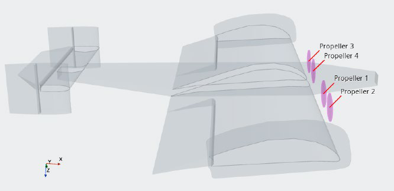
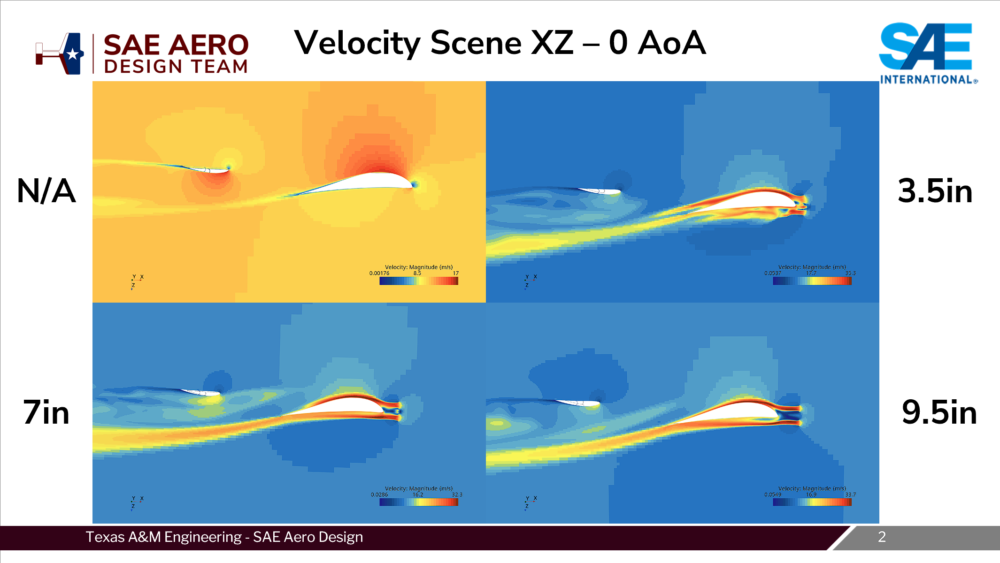
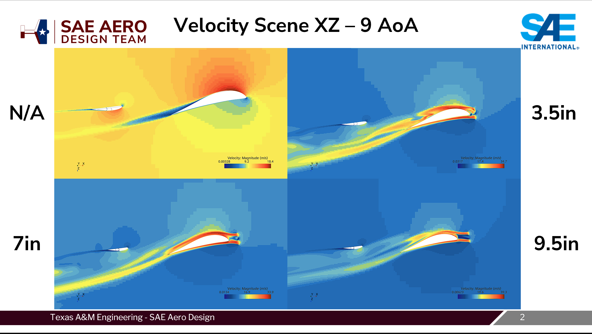
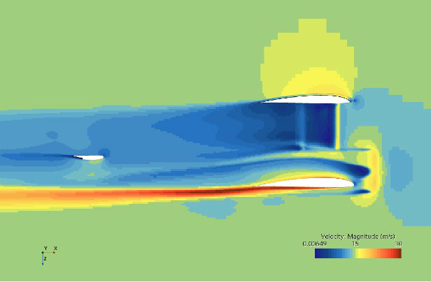
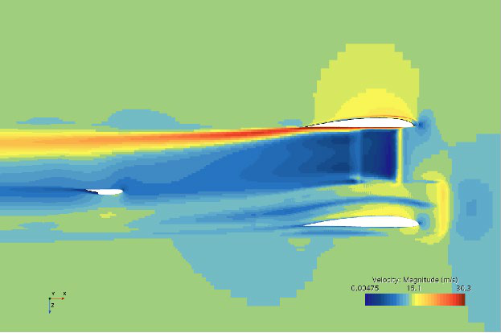

Propeller Modeling in STAR-CCM+
Using the Virtual Disk model to put propeller wash into the team's standard CFD setup and settle how much motor placement really matters — on the 2025–26 competition plane and a biplane concept.
Key takeaways
- Modeled all four propellers with STAR-CCM+'s Virtual Disk model (Blade Element Method, APC geometry, RPM from ThrustLab) — a steady, time-averaged approach far cheaper than an overset-mesh unsteady simulation of the full propeller.
- On the competition plane, swept motor position (0, 3.5, 7, 9.5 in ahead of the leading edge, plus no motors) across 0–12° AoA; propeller wash gave roughly 12–30% more main-wing lift than the no-motor case, and stabilizer downforce proved more sensitive than expected.
- On the biplane, motor placement moved the trim angle of attack from 2.5° (2 ft gap, lower wing) to 6.4° (no motors) at 10% static margin — a large enough swing to matter in planform selection. Further validation is planned.
Overview
With a new ruleset arriving for Regular Class in the 2025–26 competition season, a new powertrain rule was brought about, meaning the team had a lot more freedom in determining what motors and propellers to use for the plane, along with motor placement. This was a big discussion in that competition year, as there was a debate between placing the motors right on the wing's leading edge and somewhere out in front, where they would be an independent structure (and easier for the structures team to design and build). Although this worked in practice and we were overall happy with the decision, questions remained on whether this had any aerodynamic impacts on the plane.
The team decided that determining how to simulate propeller wash onto the main wing would be something worth looking into, and we put it on the docket for something additional to validate, since we can test this in combination with developing an inertial measurement unit to validate our CFD simulations in real-world conditions, not just wind tunnels using a NACA 0012.
Setup

Using the team's standard STAR-CCM+ base simulation and base settings to maintain continuity between results, I set up the Virtual Disk model for all four propellers, using the Blade Element Method and standard propeller geometry taken from APC to set up the disks themselves. Rotation speed was determined by using ThrustLab's calculated motor RPM for the powertrain simulated. Blade Element Method was selected since it's a cheap way to get propeller impacts in a simulation, in comparison to modeling the full propeller in CAD and creating an overset mesh with an unsteady simulation, which is significantly more expensive resource-wise. In a steady simulation, STAR-CCM+ permits a time-averaged calculation of propeller movement, which was chosen for resources. This model was designed with helicopter rotors in mind and was deemed suitable for our use case of propeller modeling.
An identical setup was also run for an example biplane design, created by one of the two groups doing large-scale planform studies over the summer. Using various motor placements (2 ft gap on upper wing, 2 ft gap on lower wing, 1 ft gap on upper wing, none) centered about the XZ midplane, impacts on lift, moment, and estimated trim AoA were analyzed.
Results
Model 1: 2025–2026 Competition Plane
The model was set up with our competition plane from the 2025–26 season, and had motors placed 3.5 in, 7 in, and 9.5 in in front of the main wing leading edge, simulating wing-LE motor placement, actual motor placement, and somewhere in between.


| AoA (°) | Main wing lift | H-stab downforce | ||||||||
|---|---|---|---|---|---|---|---|---|---|---|
| 0 in | 3.5 in | 7 in | 9.5 in | None | 0 in | 3.5 in | 7 in | 9.5 in | None | |
| 0 | 43.30 | 42.94 | 43.79 | 43.57 | 35.44 | 6.23 | 7.02 | 6.69 | 6.70 | 5.34 |
| 3 | 53.48 | 54.35 | 55.90 | 55.44 | 46.03 | 5.90 | 6.44 | 6.69 | 6.75 | 4.88 |
| 6 | 64.55 | 66.48 | 67.50 | 66.91 | 56.59 | 5.38 | 6.73 | 6.83 | 6.49 | 4.37 |
| 9 | 75.23 | 78.66 | 79.67 | 78.16 | 66.90 | 5.25 | 6.08 | 6.51 | 7.05 | 3.85 |
| 12 | 87.80 | 90.46 | 91.19 | 89.65 | 70.31 | 5.22 | 6.09 | 6.62 | 6.86 | 1.70 |
Model 2: 2026–2027 Biplane Planform Study


| AoA (°) | 2U | 2L | 1U | 0 |
|---|---|---|---|---|
| 0 | 4.43 | 3.94 | 4.04 | 4.04 |
| 3 | 6.20 | 5.72 | 5.74 | 5.80 |
| 6 | 6.63 | 6.46 | 6.29 | 6.17 |
| 9 | 6.44 | 6.26 | 6.21 | 5.97 |
| 12 | 5.94 | 5.73 | 5.85 | 5.29 |
| AoA (°) | 2U | 2L | 1U | 0 |
|---|---|---|---|---|
| 0 | 8.73 | 4.71 | 9.29 | 11.08 |
| 3 | 3.56 | −0.94 | 4.11 | 5.87 |
| 6 | −4.23 | −8.29 | −3.51 | −1.08 |
| 9 | −14.68 | −18.63 | −14.87 | −8.76 |
| 12 | −26.54 | −27.91 | −27.04 | −17.61 |
| Configuration | 2U | 2L | 1U | 0 |
|---|---|---|---|---|
| Trim AoA (°) | 5.066 | 2.500 | 5.386 | 6.384 |
Notes
- U represents upper wing, L represents lower wing, numbers represent the gap between motors in ft.
- 0 represents a simulation with no motors.
- L/D is presented for a more representative view of why motor placement matters more than expected in a biplane.
- Results of horizontal stabilizer downforce on the competition plane are much more significant than expected; it's believed to be a coincidence due to horizontal stabilizer z-position.
- Further validation is required to confirm the physical impact of these results.